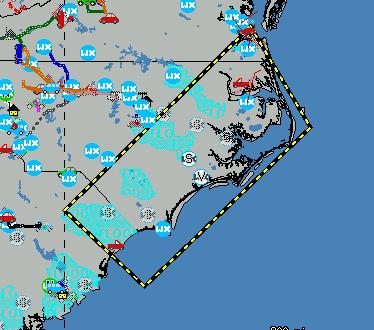
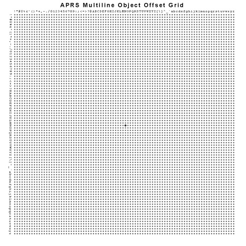

| Multiline Object Definition |
| The APRS protocol defined support for reporting National Weather Service bulletins. This was fine for putting a text bulletin that would give a description of the warning, but APRS is about being able to map out things in a graphic fashion.
APRS has the ability to create area objects, but the area objects are limited to lines, boxes, circles, triangles, and ellipses. NWS alert areas rarely nicely fit into the above defined shapes, thus the multiline definition was born. The APRS multiline object definition is based on an APRS object, which is one of the basic building blocks of APRS. The multiline portion of the definition is encoded into the comment of the object. Multiline DefinitionThe comment definition has a specific format that needs to be followed. The definition starts with a <space> character. Sample Multiline ObjectThe image below shows a multiline object which is defining an area of concern for a severe thunderstorm in the Carolinas.  The following is the APRS object packet which defined the above watch area: ;SPCS1528z*262100z3500.00NS07730.00WWSvr TStormWatch #174 }e0]FgcBS6:W{QFSAA
Multiline Definition StartThe multiline defintion starts with a <space> character followed by a right curly brace " }". Multiline Line TypesThe multiline definition includes 4 colours, and 3 line types for a total of 12 defined types.
Multiline Object TypeThere are currently only 2 object types defined.
Multiline ScaleThe scale character is a single character that defines the overall scale of the grid. It defines the distance between each of the point in the grid. The math behind the scale is based upon 1/1000th of a degree multiplied by log base 10 of the scale factor multiplied by 20. This number is then added to 33 to get into a printable character. It sounds a lot more complicated than it is… (20 * (0.0001 * log (scale))+33 = scale character This allows for many variable scales, below are some decimal degree scale factors.
To get the most resolution for defining your multiline object, you want to keep the scale as small as possible. Choose a scale factor that just encompasses the full extent of the area to be defined. Multiline GridThe offset character pairs are based on a grid as below. The first character defines the latitude offset, the second character defines the longitude offset from the base object defined. There are 45 points left or above, and 44 points right or below the reference point defined by the object. The image below can give you an idea of how the offset characters work towards defining where the vertices of your line/area exist.  End Character and IdentifierThe end of the vertex definitions is denoted by the { character and is immediately followed by a 5 character identifier. The identifier can be used to confirm that the multiline definition is real, and not just random garbage from packet collisions or other sources. Multiline Creation in APRSISCE/32APRSISCE/32 now has a rudimentary multiline object creation capability built in. Follow the procedure below to create your own tracked objects and convert them to a MultiLine object.
When APRSISCE/32 creates the Multiline object, it takes into account the distance to the most distant offset, and uses that to determine the scale required, and then attempts to find the best fit for each vertex defined. Now you can compare your object's track with the line or area boundary that you got. Expect LOTS of error depending on the size of your |